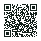

أندرويد
من متجر Google Playثبّته بضغطة واحدة، وتصله التحديثات تلقائياً عبر المتجر.
- الإصدار
- 13.1.6
- يتطلب
- أندرويد 5.0 أو أحدث

على الكمبيوتر؟ امسح الرمز بكاميرا هاتفك لتفتح صفحة التطبيق في المتجر.
الإصدار 13.1.6 لأندرويد · البناء 15 لويندوز
بيورجرام نسخة مستقلة من تيليجرام لأندرويد وويندوز. محادثاتك مع الناس تعمل كما عهدتها، أما القنوات والبوتات والمجموعات فلا تُفتح إلا بإذنك. وحين تحجب شيئاً يبقى محجوباً على كل أجهزتك، ولا يملك أحد إعادته، ولا أنت.
محاكاة لا تتصل بأي حساب
لا يوجد زر للتراجع. هذا مقصود.
لا إعدادات معقدة ولا قوائم يفرضها أحد. كل محادثة تتبع نوعها، وأنت وحدك تقرر الاستثناءات.
| النوع | الفتح | قائمة المحادثات | الإشعارات | قرارك |
|---|---|---|---|---|
| الأشخاصبما فيها المحادثات السرية | تُفتح دائماً | تظهر كالمعتاد | تصل كالمعتاد | لا يلزم أي قرار |
| القنوات والبوتات والمجموعاتقبل أن تقرر | لا تُفتح قبل إذنك | تظهر، وتسألك عند فتحها | لا تصل | السماح أو الحجب النهائي |
| ما سمحت به | تُفتح مباشرة | تظهر كالمعتاد | تصل كالمعتاد | تسحب السماح متى شئت |
| ما حجبته نهائياً | لا تُفتح أبداً | تختفي فوراً | لا تصل أبداً | قرار نهائي على كل أجهزتك |
والمحادثات التي يصنّفها تيليجرام نفسه مقيّدة أو حساسة لا تُفتح في بيورجرام، حتى لو سمحت بها.
تحديث يجعل القاعدة أوضح في كل شاشة، وأصرم في كل تنبيه.
ما يشتت أو يؤذي يصل غالباً عبر البحث العام والاقتراحات والإعلانات، لا عبر من تعرفهم. لذلك أزلنا هذه المداخل كلها، وأبقينا كل ما تحتاجه للتواصل.
الرسائل والمكالمات تنتقل بين جهازك وخوادم تيليجرام مباشرة، بتشفير تيليجرام نفسه. خادم بيورجرام يحفظ قوائمك وما يلزم لمزامنتها بين أجهزتك، ولا شيء غير ذلك.
الغرض واحد: أن تصل قوائمك إلى كل أجهزتك، وأن يبقى ما حجبته محجوباً ولو حذفت التطبيق أو غيّرت جهازك.
ولا نعرض إعلانات، ولا نتتبّعك عبر التطبيقات والمواقع، ولا نبيع بياناتك أو نشاركها.
حذف التطبيق أو تثبيته من جديد لا يرفع الحجب. قوائمك تعود كما هي على أي جهاز تسجّل الدخول منه.
حين يسجّل جهاز جديد الدخول إلى حسابك يصلك طلب موافقة على جهازك الحالي. تقبله أو ترفضه، وإن لم تردّ يُقبل بعد سبعة أيام.
تطلب حذف كل بياناتك من داخل التطبيق، فيُنفَّذ بعد ستين يوماً تبقى فيها قوائمك سارية، ويمكنك الإلغاء قبلها.
سجّل الدخول بحساب تيليجرام الذي تستخدمه اليوم. لا حساب جديد، ولا إعداد طويل، وقوائمك واحدة على كل أجهزتك.
ثبّته بضغطة واحدة، وتصله التحديثات تلقائياً عبر المتجر.

على الكمبيوتر؟ امسح الرمز بكاميرا هاتفك لتفتح صفحة التطبيق في المتجر.
نسخة محمولة لا تحتاج إلى تثبيت: فك الضغط وشغّل Puregram.exe. تصلك التحديثات من داخل التطبيق.
للتأكد من سلامة ملف ويندوز بعد تنزيله، قارن بصمة SHA-256 الظاهرة هنا ببصمة الملف على جهازك.
لا. بيورجرام مشروع مستقل مبني على الشيفرة المفتوحة لتطبيقات تيليجرام، وغير تابع لشركة Telegram ولا معتمد منها. تسجّل الدخول بحسابك في تيليجرام نفسه، وتنتقل رسائلك عبر شبكة تيليجرام وتشفيرها كما هي.
لأن قيمة الحجب في ثباته. تتخذ القرار في لحظة وضوح، فيصمد في اللحظات التي يضعف فيها العزم. لهذا يسألك التطبيق مرتين قبل التنفيذ، ثم لا يعرض أي طريقة للتراجع. أما السماح فتستطيع سحبه متى شئت.
قوائمك محفوظة مع حسابك لا مع الجهاز. عند تسجيل الدخول من جهاز جديد يصلك طلب موافقة على جهازك الحالي، ويُقبل تلقائياً بعد سبعة أيام إن لم ترفضه، ثم تصل إليه قوائمك كما هي.
لا. رسائلك تنتقل بين جهازك وخوادم تيليجرام مباشرة ولا تمر بخوادمنا. ما نحفظه هو قوائمك وما يلزم لمزامنتها، وتفاصيله كاملة في سياسة الخصوصية.
من داخل التطبيق. يُنفَّذ الحذف بعد ستين يوماً تبقى فيها قوائمك سارية، ويمكنك إلغاء الطلب خلالها. المهلة مقصودة، لأن الحذف يمحو كذلك ما حجبته نهائياً، ولا ينبغي أن يكون باباً يُفتح في لحظة ضعف.
توقفنا عن توزيع الملف المباشر، وأصبحت نسخة أندرويد متاحة من Google Play وحده. نسخة المتجر لا تُثبَّت فوق القديمة، فاحذف القديمة أولاً، ثم ثبّت بيورجرام من المتجر وسجّل الدخول من جديد. قوائمك محفوظة مع حسابك فلا يضيع منها شيء، لكن هاتفك سيظهر كجهاز جديد: وافق عليه من جهاز آخر مسجّل على حسابك مثل ويندوز، أو تصله قوائمك تلقائياً بعد سبعة أيام، وتبقى القنوات والبوتات والمجموعات مغلقة حتى ذلك الحين.
نعم، بالكامل. لا اشتراك ولا رسوم ولا إعلانات، وشيفرته المصدرية متاحة لأي شخص يريد مراجعتها.
ثبّت بيورجرام، وافتح ما ينفعك، واحجب ما لا ينفعك. والباقي عليه.